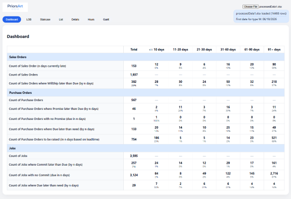
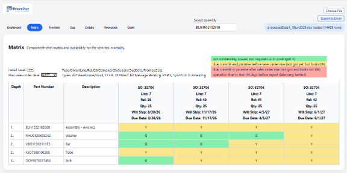
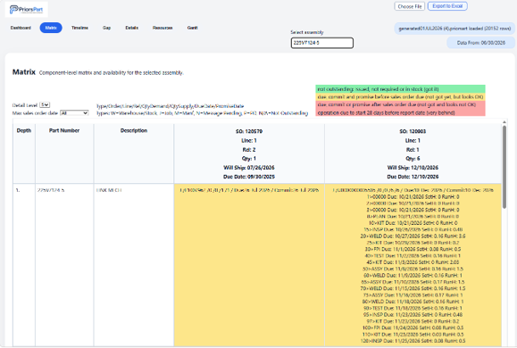
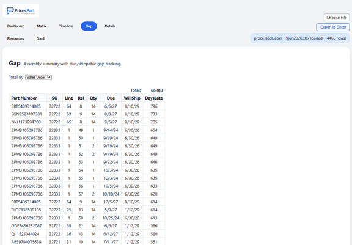
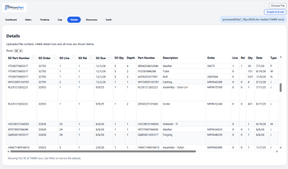
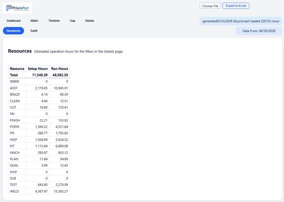
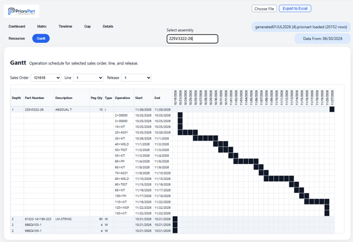

PriorsArt Visiblity is a tool to help manufacturers improve production visibility, action
purchase orders and work orders and clearly communicate status and expected completion dates internally and with customers.
Complex manufacturing businesses, especially those with low volume high mix and high component count assemblies struggle with visibility and planning, and many have poor on time delivery performance.
PriorsPart Visibility solves this problem using a proprietary process taking standard ERP data, generating exploded bills of materials and identifying for specific sales orders the purchase orders, work orders and operation details required, determining status and allowing targeted action and attention.
The default landing page is a dashboard showing a summary of sales orders, purchase orders and jobs. Shown are key measures like the number of sales orders currently in arrears, total sales orders count and prediction of these that will be late, purchase orders and jobs due or promised later than need, or yet to be raised. Each measure is displayed as a total count, and the amount in each age bucket, showing how late things currently are.

On the Matrix page any part number where sales orders exist is selected and a matrix is shown of the exploded bill of materials, and supply source for each sales order of the materials. This is typically items from inventory, purchase orders, or work orders. There is a selectable level of detail, ranging from a simple RYG status, through to detail of operations, resources and hours required to complete each sales order. A determined date (the WillShip date) for when each sales order is able to be completed is shown based on material availability and predicted work order completion dates.


The Gap page is a sorted list showing the gap between due dates and Will Ship dates for sales orders. This is able to identify future delinquencies, allowing other pages to show specific problems requiring attention. This can be selected to show gaps for specific sales orders, or to sum any gaps for all sales orders by part number.

The TimeLine page shows for a selected part number the cumulative quantity over time due for sales orders, and the corresponding will ship dates and any delinquency predicted. The graphical representation can be thought of as a vertical gap between lines showing the quantity delinquent, and a horizontal gap showing the timeframe of delinquency.
The Details page is a table based view of the Matrix page for multiple part numbers, and it has the extra feature of allowing filters that are used by the Resources page. Based on the filter selection, the Resources page shows the standard hours required to complete outstanding operations. The can be useful to determine required resource levels. Typically the filter may be on a sales order due date, so as the Resources page shows the necessary hours per resource required before that sales order can complete.


The Gantt page allows a specific sales order to be selected, and a Gantt chart is then shown for the operations and purchase orders required to complete that sales order.

PriorsPart provides software to interface with ERP, and is able to provide consulting services to assist with the usage of this product, and to take business actions to address delinquencies, pre-empting being late.
Request more info